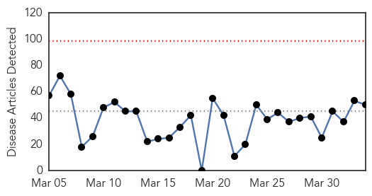
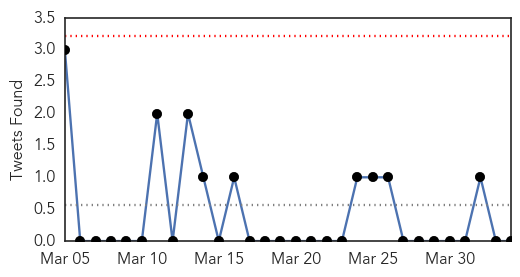

30 Day Trends
Web: 0 alerts, 0 warnings
Twitter: 0 alerts, 0 warnings
Top Articles:
- 0.995
- Water scarcity in Madurai raises fever fear
- 0.946
- 4 new flu deaths in North Carolina
- 0.929
- Man contaminated with rabies in Mali dies in France
- 0.917
- Chicago Tribune
- 0.917
- Chicago Tribune
- 0.917
- Chicago Tribune
- 0.917
- Chicago Tribune
- 0.910
- The world windows to Thailand
- 0.908
- Child arthritis cases spike as Lyme disease pushes further into Canada
- 0.892
- Three wards closed as hospital is hit by the vomiting bug
- 0.866
- Mongolian-flagged cargo ship with North Korean crew sinks off South Korea
- 0.866
- Chile says no reports of injuries or damage after new quake
- 0.866
- Chile orders preventive evacuation of northern coastline
- 0.813
- Health services crippled as hospitals struggle
- 0.802
- Collective will can curb TB epidemic
- 0.772
- 3 on Staten Island affected as cases of rare skin infection double in New York, report says
- 0.758
- Inter-Korea/News/News/KBS World Radio
- 0.716
- Over 100 stomach illness complaints linked to Holland restaurant
- 0.664
- Stroke Risk Spikes Shortly After Shingles Episode: Study
- 0.647
- "Hundreds of thousands" hit by Rakhine aid pullouts
- 0.640
- Zim bans vegetable, fruit imports from SA
- 0.639
- Memphis News and Events
- 0.624
- UN warns of health crisis brewing in west Myanmar
- 0.608
- CDC warns of new risk related to e-cigarettes
- 0.605
- Broken Hearts Can Kill You
- 0.598
- Action Plan on Lyme Disease and Bill C-442
- 0.594
- U.Tsevegmid: Children make up 20 percent of Mongolians going abroad for medical treatment
- 0.593
- Dominican Surgeries Kill Americans
- 0.590
- CDC's Recommended Sodium Intake Levels May Have Negative Health Consequences, Study
- 0.590
- Liquid Nicotine in E-Cigarettes Rising Cause of Poisonings: CDC
- 0.588
- Health crisis brewing in Myanmar: UN
- 0.587
- New EHV-1 Cases Confirmed in Minnesota
- 0.587
- UN warns of health crisis brewing in west Myanmar, SE Asia News & Top Stories
- 0.577
- TB scare at Hre Central Hospital
- 0.558
- US army names Fort Hood shooter as Ivan Lopez
- 0.558
- Algeria's Bouteflika makes rare appearance in talks with Kerry
- 0.558
- Yanukovich 'issued criminal order' to fire at protesters
- 0.558
- Video: Kiev’s far-right groups refuse to disarm
- 0.558
- Video: Kenyan Muslims issue warning over cleric killings
- 0.558
- Turkey's Constitutional Court overturns ban on Twitter
- 0.558
- Turkey lifts Twitter ban
- 0.558
- Marquis de Sade’s ‘120 Days of Sodom’ returned to France
- 0.558
- The scars World War I left on French Canadians
- 0.558
- Pakistan's Musharraf survives new assassination attempt
- 0.558
- Israel scraps Palestinian prisoner release in blow to peace talks
- 0.558
- France 'on alert’ amid Guinea Ebola outbreak
- 0.558
- Chile rocked by 7.6-magnitude aftershock
- 0.558
- Chad to withdraw troops from Central African Republic
- 0.529
- Health 4 Haiti helps those in need
- 0.522
- RI Hospitals Must Report Overdoses Within 48 Hours
Showing top 50 articles...
Top Tweets:
-
No tweets found for Apr 03, 2014
Web/News Articles
Tweets
Article Locations

Article Confidences